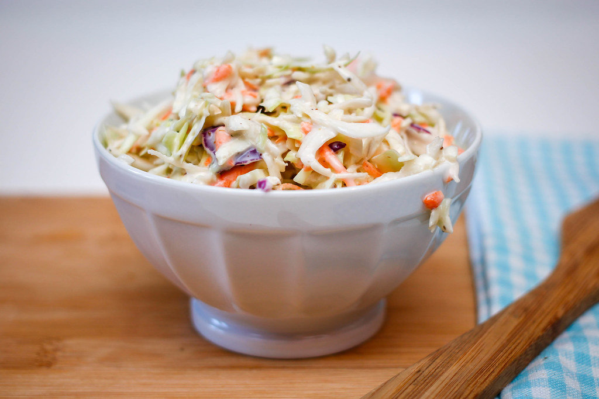

Home
Coleslaw

This is an
Allrecipes easy coleslaw dressing
recipe I use often when prepping meals or in need of a quick side dish.
This can be used as a side dish or used in a dish like on a chicken
sandwich.
Ingredients
- 1/2 cup mayonnaise
- 2 tablespoons white sugar
- 1 & 1/2 tablespoons lemon juice
- 1 tablespoon vinegar
- 1/2 teaspoon ground black pepper
- 1/4 teaspoon salt
- 14 - 16 oz. bag of coleslaw (shredded cabbage)
Directions
-
Step 1: In a small bowl or jar, whisk together mayonnaise, sugar, lemon
juice, vinegar, pepper, and salt until smooth and creamy.
-
Step 2: If serving later, store in an airtight container and refrigerate
for up to a week in advance.
-
Step 3: Empty shredded cabbage into colander and wash under cold water.
Lay on a kitchen towel to dry. Optionally, use additional kitchen towel
to squeeze out water and dry faster.
-
Step 4: In a large serving bowl, add washed and now dry cabbage. Pour in
dressing and mix with serving utensils. Serve immediately.